Reveal by Qwarry — User Guide
URL: https://reveal.qwarry.com/ · Languages: English, French · Last updated: May 2026
1. Introduction
Reveal by Qwarry is a campaign analytics platform that provides advertisers and media buyers with deep insights into their digital advertising campaigns. Using Qwarry's proprietary semantic analysis and cookieless targeting technology, Reveal analyzes ad impressions to deliver:
- Brand Safety & Sentiment scoring
- Semantic categorization (Semos) of content where ads are served
- Contextual Personae — audience profiling based on content consumption
- Domain-level analytics and reporting
- PPTX report generation for client presentations
2. Getting Started
Login
- Go to https://reveal.qwarry.com/login
- Enter your email and password.
- Click Login.
Forgot Password
- Click Forgot password? on the login page.
- Enter your email address and click Continue.
- Follow the reset link sent to your email.
3. Navigation
The top-right corner shows your initials. Click on it to open the dropdown menu:
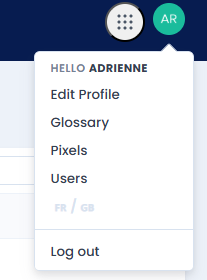
| Menu Item | Description |
|---|---|
| Edit Profile | Update your personal information |
| Glossary | Definitions of all key terms |
| Pixels | Create and manage tracking pixels |
| Users | User management (admin) |
| FR / GB | Switch between French and English |
| Log out | End your session |
4. Campaign List
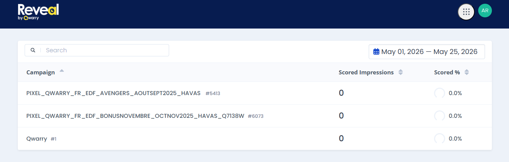
The home page displays all campaigns associated with your account. The table shows:
- Campaign — Campaign name with its pixel ID (e.g. #5413)
- Scored Impressions — Total number of impressions analyzed
- Scored % — Percentage of impressions successfully scored (with progress ring)
Use the Search bar to filter campaigns by name. Use the date picker (top right) to select the analysis period.
Click on any campaign to access its detailed analytics.
5. Overview Tab
After selecting a campaign, you land on the Overview tab. The header shows the campaign name, date range picker, and a Dimensions filter button.
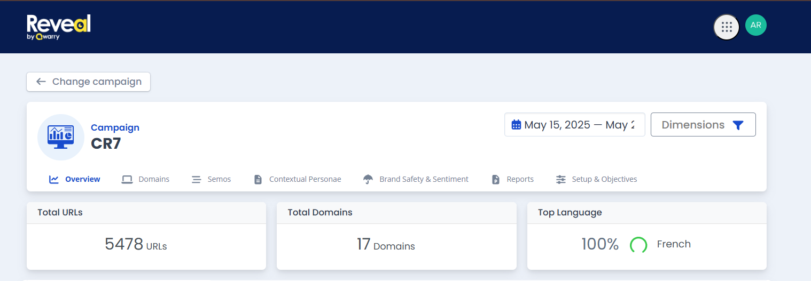
The tab bar provides access to: Overview, Domains, Semos, Contextual Personae, Brand Safety & Sentiment, Reports, Setup & Objectives.
The top section displays three summary cards:
- Total URLs — Number of unique URLs where ads were served
- Total Domains — Number of unique domains
- Top Language — Most common content language (with percentage)
KPI Summary & Impressions Chart
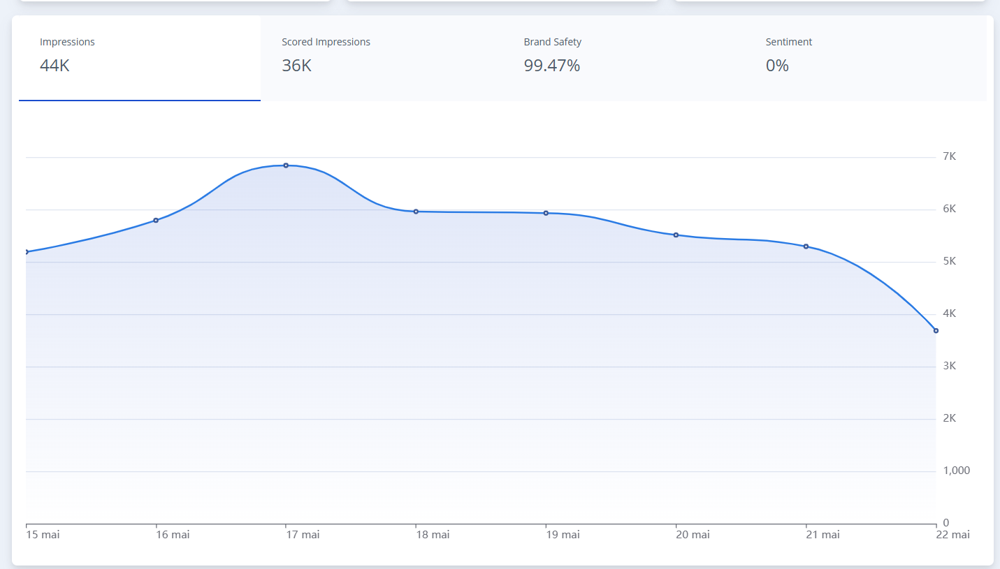
Below the cards, four KPIs are displayed:
- Impressions — Total impressions (e.g. 44K)
- Scored Impressions — Impressions analyzed by Reveal (e.g. 36K)
- Brand Safety — Percentage of brand-safe impressions (e.g. 99.47%)
- Sentiment — Percentage of positive sentiment
A timeline chart shows daily impression volume over the selected period.
Top Domains & Top Languages
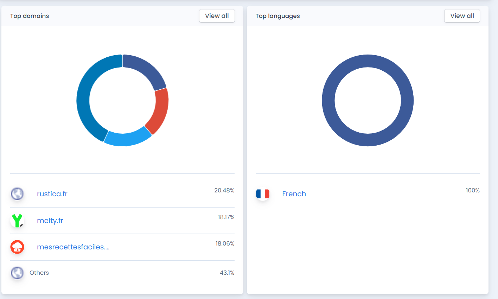
Two donut charts display:
- Top domains — Distribution of impressions across domains (with favicon, name, and percentage). Click View all to see the full list.
- Top languages — Language distribution of content.
Top Semos & Top Contextual Personae
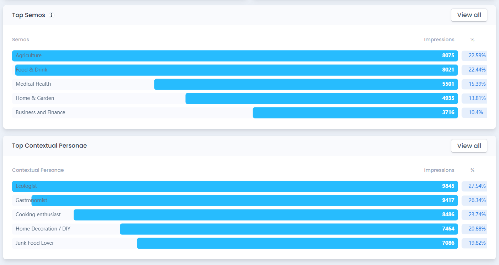
Two horizontal bar charts show:
- Top Semos — Top 5 semantic categories with impression count and percentage
- Top Contextual Personae — Top 5 audience profiles with impression count and percentage
Click View all to navigate to the full tab.
6. Domains Tab
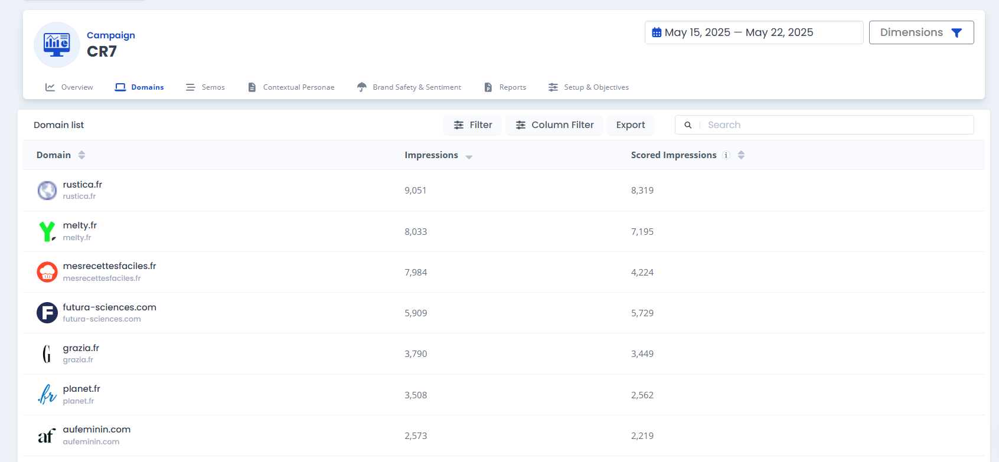
The Domains tab shows a Domain list table with the following features:
- Filter — Filter domains by criteria
- Column Filter — Choose which columns to display
- Export — Export data to CSV (sent by email)
- Search — Search for a specific domain
Table columns include:
| Column | Description |
|---|---|
| Domain | Domain name with favicon |
| Impressions | Total impressions on this domain |
| Scored Impressions | Impressions analyzed by Reveal |
Additional columns available via Column Filter: % Impressions, % Scored Impressions, Scored %, Top Category, Language, Brand Safety, Brand Suitability, Sentiment.
Click on any domain to see its detailed breakdown.
7. Semos Tab
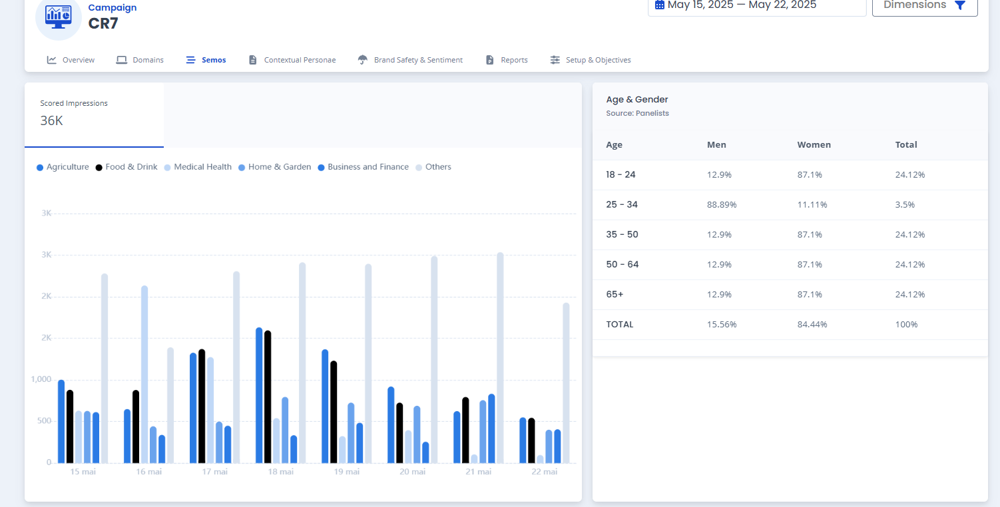
The Semos tab shows:
- Scored Impressions total (e.g. 36K)
- A daily bar chart showing impression distribution across top Semos over time (color-coded by category)
- Age & Gender table (Source: Panelists) — Breakdown by age group (18-24, 25-34, 35-50, 50-64, 65+) with Men/Women/Total percentages
Semos List
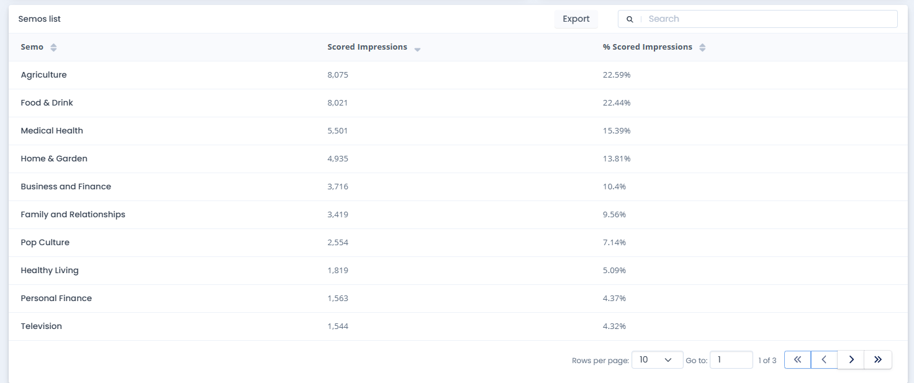
A paginated table listing all Semos with:
- Semo — Category name
- Scored Impressions — Number of scored impressions
- % Scored Impressions — Percentage of total
Use Export to download or Search to filter. Pagination controls at the bottom (Rows per page, Go to page).
SubSemos List
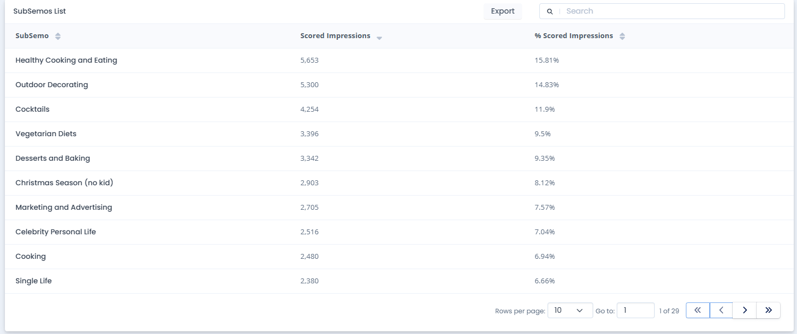
A detailed breakdown into subcategories (e.g. Healthy Cooking and Eating, Outdoor Decorating, Cocktails, Vegetarian Diets, Desserts and Baking, etc.) with the same columns.
8. Contextual Personae Tab
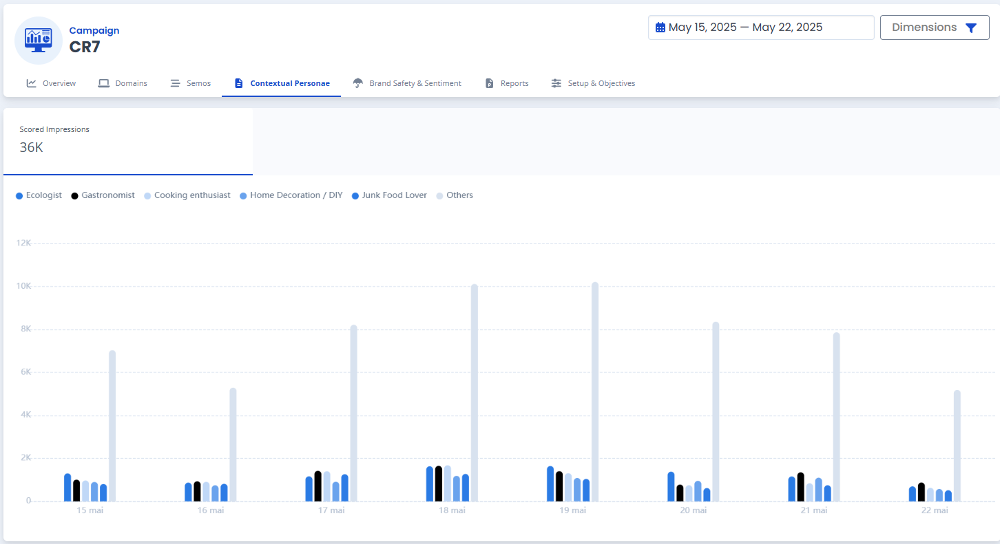
Similar layout to the Semos tab:
- Scored Impressions total
- A daily bar chart showing impression distribution across top Contextual Personae over time
Contextual Personae List
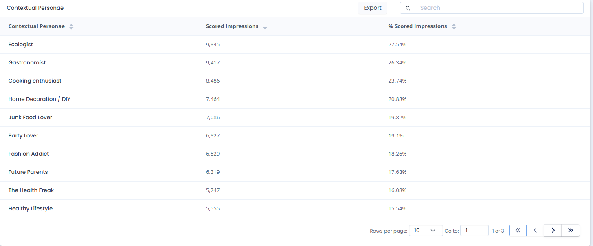
Paginated table with:
- Contextual Personae — Profile name
- Scored Impressions — Number of impressions
- % Scored Impressions — Percentage of total
9. Brand Safety & Sentiment Tab
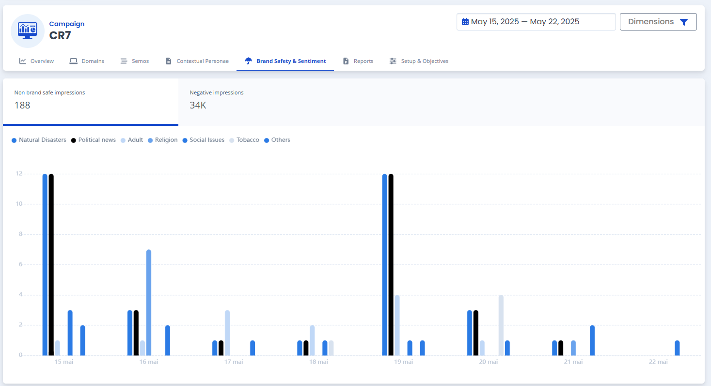
The top section shows two KPIs:
- Non brand safe impressions — Count of unsafe impressions (e.g. 188)
- Negative impressions — Count of negative sentiment impressions (e.g. 34K)
A daily bar chart shows the distribution of sensitive categories over time: Natural Disasters, Political news, Adult, Religion, Social Issues, Tobacco, and Others.
Sensitive Semos List
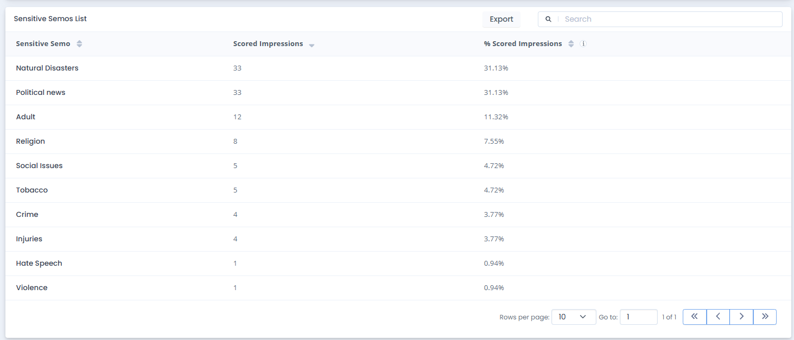
Table listing all sensitive categories detected:
| Sensitive Semo | Example |
|---|---|
| Natural Disasters | 31.13% |
| Political news | 31.13% |
| Adult | 11.32% |
| Religion | 7.55% |
| Social Issues | 4.72% |
| Tobacco | 4.72% |
| Crime | 3.77% |
| Injuries | 3.77% |
| Hate Speech | 0.94% |
| Violence | 0.94% |
Risk Domains
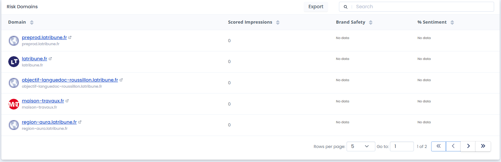
Lists domains flagged as risky with columns: Domain (clickable link), Scored Impressions, Brand Safety, % Sentiment.
10. Reports
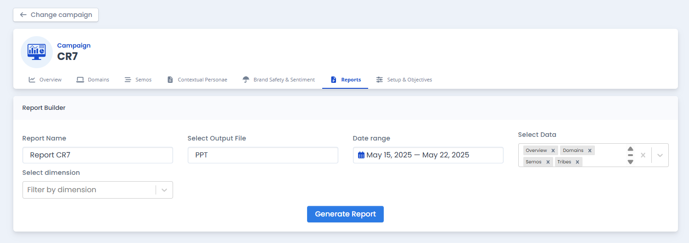
The Report Builder allows you to generate PowerPoint (PPTX) presentations from your campaign data.
To generate a report:
- Report Name — Enter a name for the report (e.g. "Report CR7")
- Select Output File — Choose PPT format
- Date range — Select the period to cover
- Select Data — Choose which sections to include (multi-select): Overview, Domains, Semos, Tribes
- Select dimension — Optionally filter by dimension
- Click Generate Report
11. Setup & Objectives
The Setup & Objectives tab has two sub-tabs: Setup and Objectives.
Setup
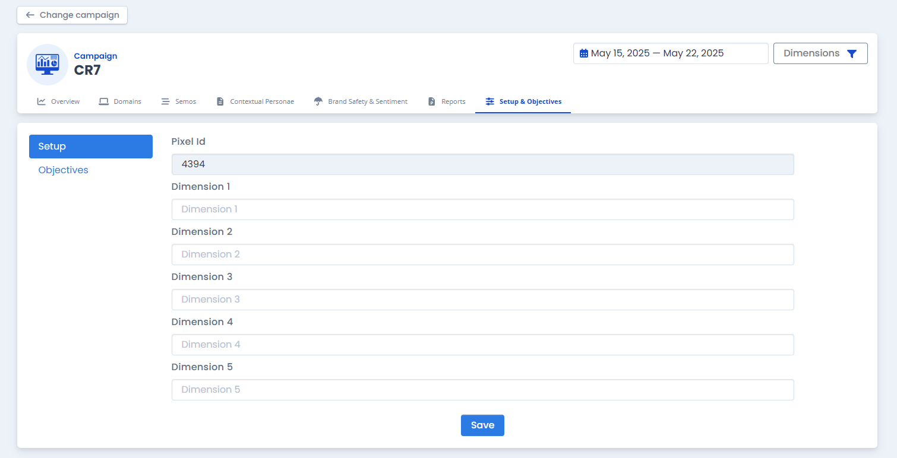
Configure the campaign's technical settings:
| Field | Description |
|---|---|
| Pixel Id | The tracking pixel ID associated with this campaign (e.g. 4394) |
| Dimension 1–5 | Custom dimension labels for data segmentation (e.g. Campaign, Line Item, Creative ID) |
Click Save to apply changes.
Objectives
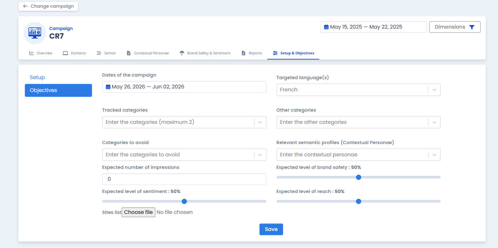
Define campaign goals and targeting parameters:
| Field | Description |
|---|---|
| Dates of the campaign | Start and end dates |
| Targeted language(s) | Language targeting (dropdown) |
| Tracked categories | Semos to track (maximum 2) |
| Other categories | Additional categories of interest |
| Categories to avoid | Semos to exclude |
| Relevant semantic profiles | Contextual Personae to target |
| Expected number of impressions | Target impression volume |
| Expected level of brand safety | Target % (slider, e.g. 50%) |
| Expected level of sentiment | Target % (slider) |
| Expected level of reach | Target % (slider) |
| Sites list | Upload a file with authorized sites |
Click Save to store objectives.
12. Pixels
Access the Pixels page from the navigation dropdown menu. This page allows you to create and manage tracking pixels.
Pixel List
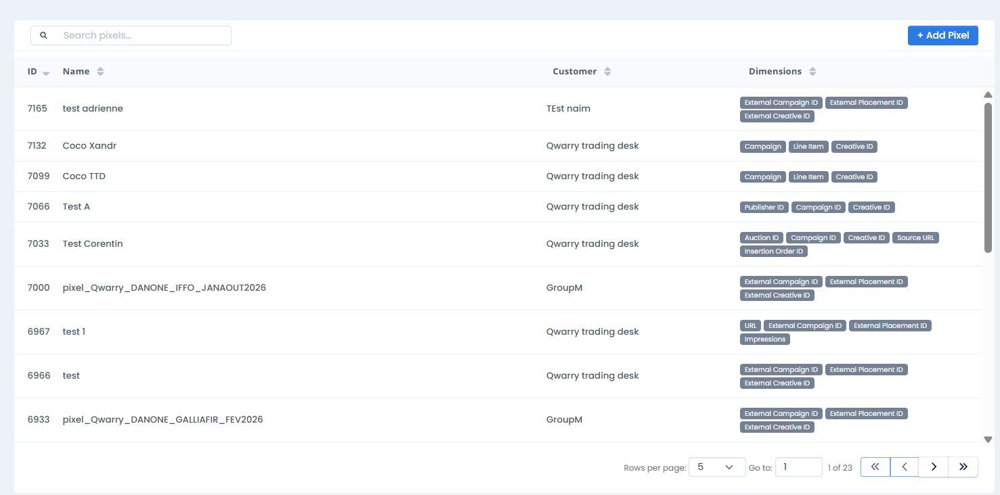
The pixel table displays:
| Column | Description |
|---|---|
| ID | Unique pixel identifier (e.g. 7165, 7132) |
| Name | Pixel name (e.g. "Coco Xandr", "pixel_Qwarry_DANONE_IFFO_JANAOUT2026") |
| Customer | Customer/advertiser (e.g. "Qwarry trading desk", "GroupM") |
| Dimensions | Configured dimensions shown as badges (e.g. External Campaign ID External Placement ID External Creative ID) |
Use Search pixels… to filter. Pagination at the bottom (Rows per page: 5, page navigation).
Creating a Pixel
Click the + Add Pixel button (top right) to open the creation dialog:
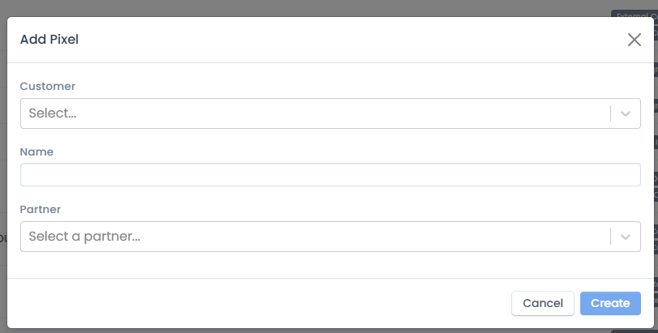
Fill in the following fields:
- Customer — Select from dropdown (e.g. Qwarry trading desk, Starcom, Henkel, Celine, Stellantis, Gamned)
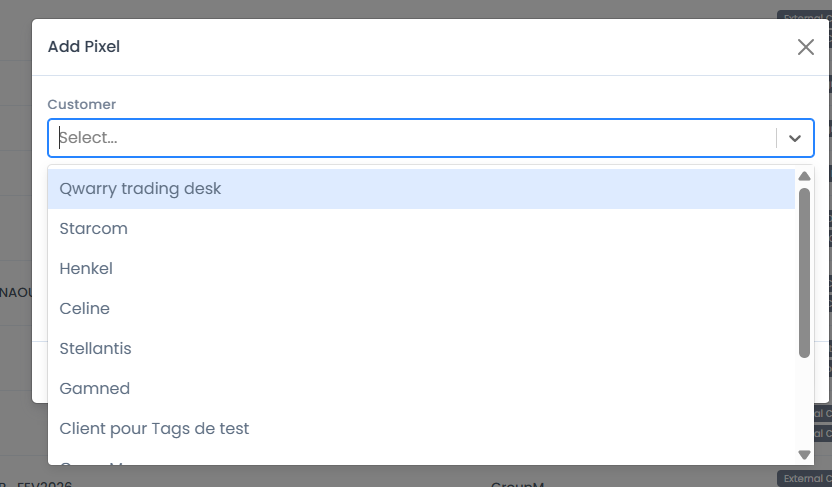
- Name — Enter a descriptive name for the pixel
- Partner — Select the DSP/partner from dropdown:
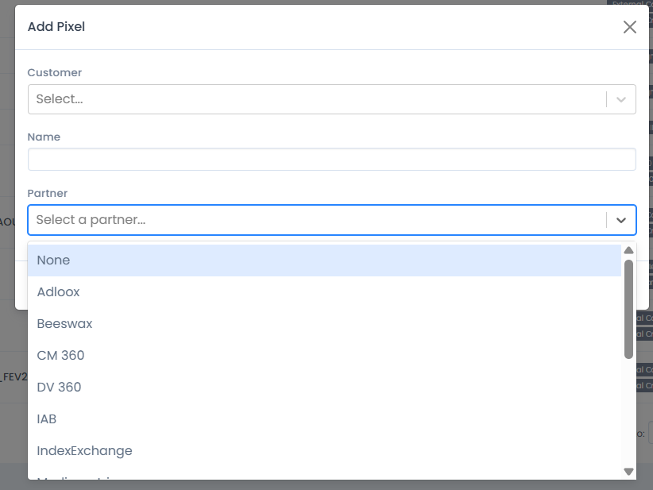
Available partners include: None, Adloox, Beeswax, CM 360, DV 360, IAB, IndexExchange, and more.
- Click Create to generate the pixel (or Cancel to close).
Viewing a Pixel & Getting the Tag
Click on any pixel in the list to view its details:
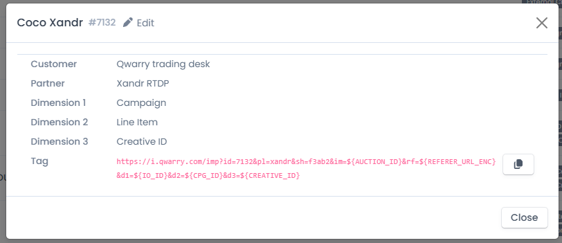
The detail view shows:
- Pixel name & ID (e.g. "Coco Xandr #7132") with an Edit button
- Customer — e.g. Qwarry trading desk
- Partner — e.g. Xandr RTDP
- Dimension 1, 2, 3 — e.g. Campaign, Line Item, Creative ID
- Tag — The full pixel URL to implement in your DSP:
https://i.qwarry.com/imp?id=7132&pl=xandr&sh=f3ab2&im=${AUCTION_ID}&rf=${REFERER_URL_ENC}&d1=${IO_ID}&d2=${CPG_ID}&d3=${CREATIVE_ID}
Click the copy button (📋) next to the tag to copy it to your clipboard, then paste it into your DSP platform's tracking settings.
13. Glossary
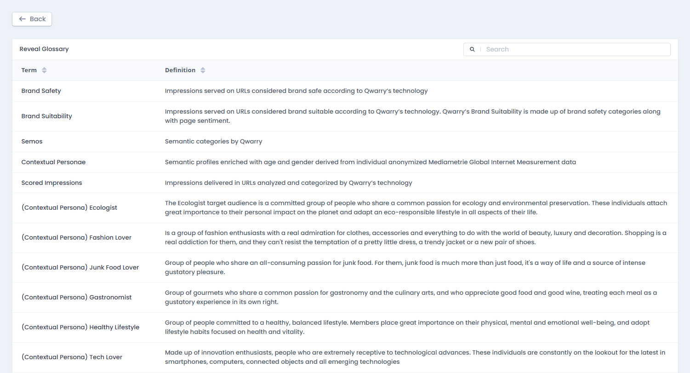
Access the Glossary from the navigation dropdown. It provides a searchable table of all key terms:
| Term | Definition |
|---|---|
| Brand Safety | Impressions served on URLs considered brand safe according to Qwarry's technology |
| Brand Suitability | Impressions served on URLs considered brand suitable. Combines brand safety categories along with page sentiment |
| Semos | Semantic categories by Qwarry |
| Contextual Personae | Semantic profiles enriched with age and gender derived from individual anonymized Mediametrie Global Internet Measurement data |
| Scored Impressions | Impressions delivered in URLs analyzed and categorized by Qwarry's technology |
The glossary also includes detailed descriptions of each Contextual Persona (Ecologist, Fashion Lover, Junk Food Lover, Gastronomist, Healthy Lifestyle, Tech Lover, etc.).
14. Troubleshooting
| Issue | Solution |
|---|---|
| "Bad credentials" | Verify your email and password. Use "Forgot password?" if needed. |
| "Campaign not found" | Contact your account manager to verify campaign access. |
| "No data found for the selected period" | Adjust the date range or verify the campaign dates in Setup. |
| "Network error" | Check your internet connection and try again. |
| Scored % shows 0% | The pixel may not be receiving data yet. Verify the tag is correctly implemented in your DSP. |
Last updated: May 2026